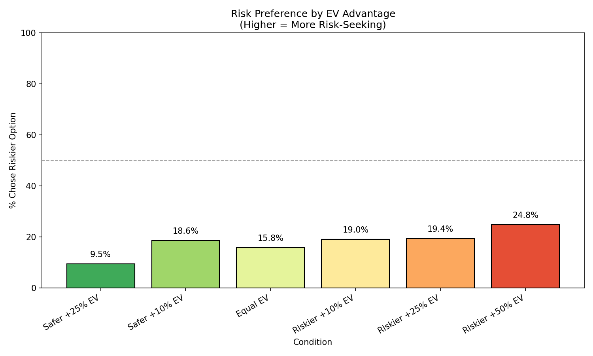
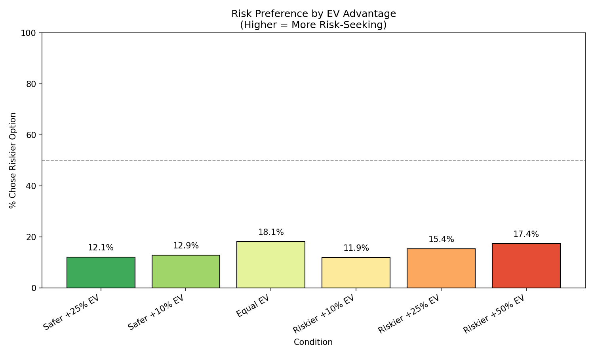
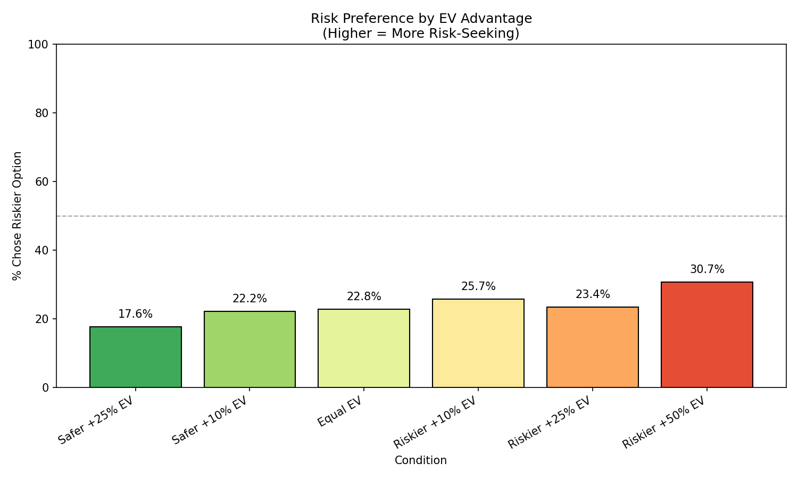

An Investigation into LLM Risk Aversion
Introduction
To what extent AI systems exhibit risk aversion, or if they even exhibit consistent risk preferences is very important. LLMs, i.e. AIs in the form of chat bots, have rapidly become integrated in various parts of our society, and given their stochastic nature, there has been an important focus on security and reliability of their outputs. And while we do indeed care somewhat about how they conceive of risk in the chat response domain, the scope of damage is relatively limited. The recent (i.e. last 12 months) of improvements in both reinforcement learning with verifiable rewards (RLVR) and in the agentic-ness of AI systems has provided a good opportunity to advance the study of risk preferences in LLMs. This allows us to access both a higher-importance domain where AI systems autonomously make decisions which directly impact the world, and for which they have been more directly trained to maximize an objective. This more closely mirrors what we should expect AI systems of the future to do.
Background
Currently, the relatively nascent literature of this area of study is by-and-large formed by mapping human surveys and lab experiments onto LLMs, or some role-play equivalent. There’s some work putting models into the context of games, or role-playing as a particular demographic, but little-to-no work analyzing action-taking AI systems’ risk aversion.
It’s also the case that models haven’t been trained to win at arbitrary games that they might see in user prompts, they’ve been trained to be good assistants. Perhaps those are correlated, but in the long run we should expect to see them be trained towards succeeding at particular tasks. And indeed, we are seeing this with RLVR.
Approach
There are a great many benchmarks which test action-taking AI systems as a whole, particularly in areas where they have enough capabilities to robustly take action towards a verifiable reward. So, we can adapt existing benchmarks to instead test risk aversion as follows:
- Annotate tasks with two different solution approaches. Block roughly all but these two.
- Run “forced-choice” (here, meaning that the model doesn’t even get to choose, we choose for it) trials along each of these approaches to understand what solve likelihood given each path is.
- Filter out any tasks which have negligible success probability or where the model found an alternative solution.
- Extract the “pre-choice” parts of the calibration run
- Re-run, with the model informed of the solution probabilities along each path and the reward trade-off for each path. Allow the model to choose, and record.
- Analyze the model’s choices across what are effectively now lotteries.

Initial results
| Model | CRRA ρ | CRRA R² | CPT α | CPT γ | CPT R² | Best Model |
|---|---|---|---|---|---|---|
| Sonnet | 4.24 | 0.177 | 0.20 | 0.87 | 0.164 | CRRA |
| GPT5-mini | 5.36 | 0.365 | 0.20 | 0.78 | 0.362 | CRRA |
| GPT5-nano | 5.06 | 0.317 | 0.20 | 0.85 | 0.328 | CPT |
GPT-5-Nano

GPT-5-Mini

Claude-Sonnet-4.5

===
- not tryna be like him fr
- preliminarily, from Utility Engineering. Plot to come, but GPT-4o-mini utility is fit well by a log expected value function.
- Outline:
- some basic background on risk aversion - econ, psych, whatever
- a high level summary of what has been done with respect to llms
- claim what needs to be done: treat the systems as agents + consider rewards they are actually trained to care about.
- why? uh duh. but also it’s like if you project things to the future, this is the way things are moving, and you should generally expect the things which are explicitly or implicitly trained for to dominate. this is the paradigm you want.
- explain my initial set of constraints (binary rewards) and why it failed
- explain the iteration that works, at least as a proof-of-concept (score-based CTFs)
- the items of interest are both what the risk aversion results are and the survey-based methods (easier elicitation) which better correlate to these agent-based results
- conclude with some more detail on experiments, how they’d be run, how they’d differ from prior work, etc.